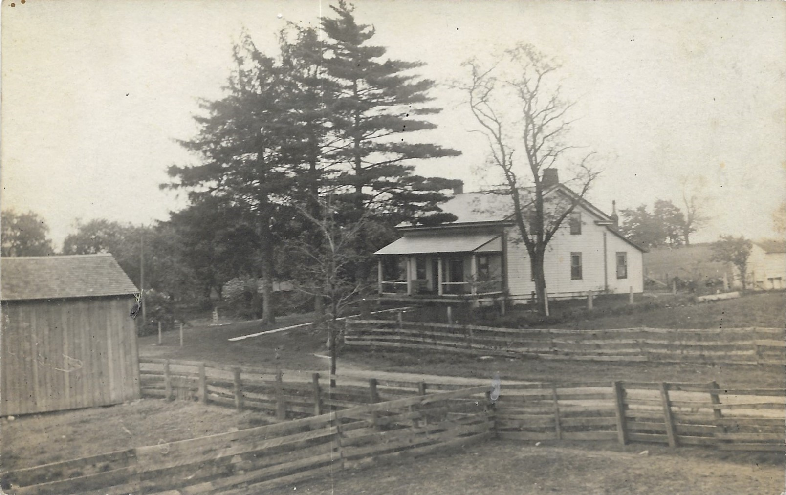
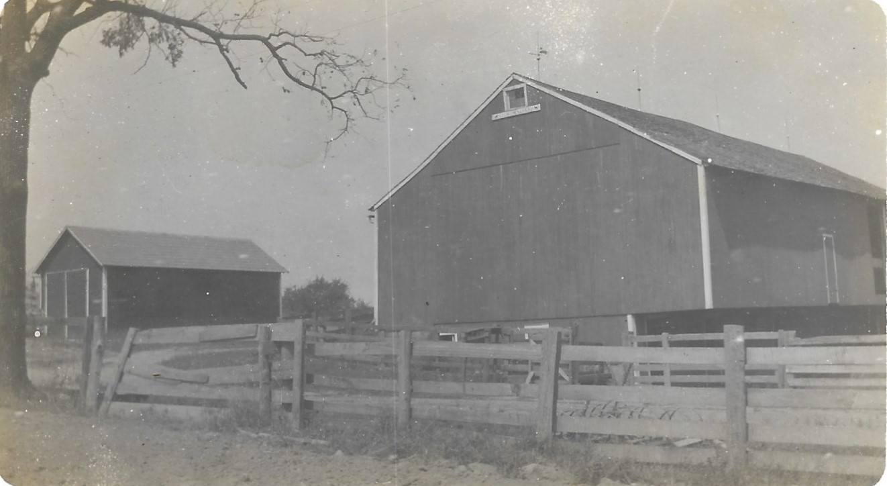
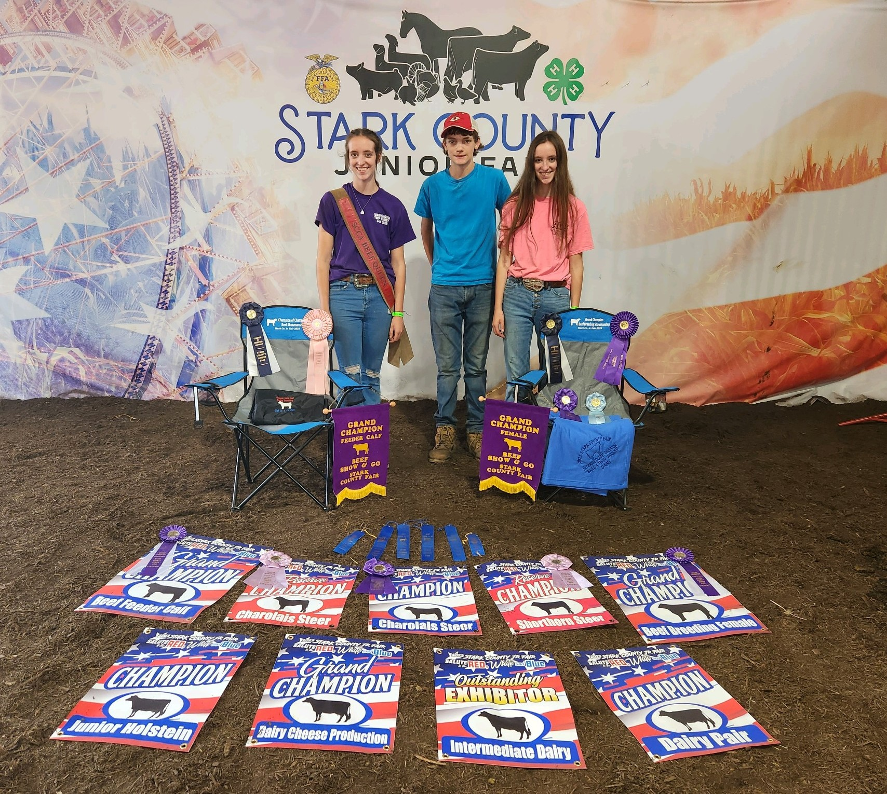

House-Circa 1912
The early generations
The farm has seen many family members and changes in its 200 year history.
In 1819, George Pore (aka Poor or Pohr), traveled to the land office in Steubenville, Ohio. On October 20, 1819 he signed a land patent for 160 acres in the northwest corner of section 3, township 17, range 6 for an assumed price of $320. The farm today was part of these original 160 acres that is located near Paris, Ohio in Stark County. Sometime between 1824-1827, the Pore’s migrated from Westmoreland County in Pennsylvania to settle on the land.
On December 12, 1833, George’s daughter, Elizabeth married a gentleman by the name of Phillip Walker, Dan’s 3rd great grandfather. Prior to this, in the early 1820’s, Phillip had also migrated to the Paris area from Shanksville, Pennsylvania. The young couple settled on the farm and started a family. Following George’s death and an inheritance dispute, Phillip and Elizabeth purchased 80 acres on the eastern half of the farm from Christopher Pore, a son of George’s for $1500 in Oct. 1843. In the year prior to this purchase, they built the house and barn that are still in use today on the farm.

Barn-circa 1912
Phillip farmed until his death in 1898. During that time, he had remarried twice and had 10 children. In October 1899, his son, Jacob H. Walker (Dan’s great-great grandfather) inherited and/or purchased these 80 acres from his siblings for $4000.
During his lifetime, Jacob married twice (Clara Mong and Cordelia Snyder) and had four children. Like his father, he farmed until his death in 1928. At that time, his sons Homer and Lloyd inherited the farm and in turn Homer sold his share to Lloyd for $1700 in August 1928.
These first three generations grew and sold wheat, oats, hay, corn and potatoes and raised dairy cattle and hogs. In the late 1800’s, there was even a coal mine operating under the southeast corner of the farm.
Lloyd continued to farm the land, milk registered Holstein cows and raise chickens and ducks to sell. He and Mabel Vandegrift (Dan’s great grandparents) married in 1930 and they had four children that they raised on the farm like the generations before them.
In the 1950’s, with the regulations changing in handling and storing milk, Lloyd made the decision to stop milking dairy cows. For a brief period, the family tried raising hogs. At that time, they built the hog house that is still used today and located just northwest of the barn.
After raising hogs, Lloyd purchased three Angus cows in 1959 from R.E. Snode of Minerva. These cows were the beginning of our beef herd. Lloyd farmed until his death in 1991 at which time Mabel and his son Olen (Dan’s grandpa) took over. Mabel maintained ownership of the farm until her death in 2008 and then Olen purchased his siblings’ shares of the inheritance to keep the farm together. With the exception of 3 acres that were deeded off for houses for two of Lloyd’s children, 77 of the 160 original acres still remain with the family farm.
Before Mabel’s death, Olen Walker and Lois, his wife, continued to run the Angus herd and growing ear corn, wheat, hay and oats until Dan and Sonia started taking over in 2002.
Today’s generations
With the assistance of our children, Leeann, Payton, and Andrew, we continue to run the farm today. Although now in his 90’s, Olen can be found around the farm from time to time checking up on his grand kids and great-grand kids or running a tractor.
We continue to farm the land and raise the beef cattle herd. All of the farmland plus what is rented from neighbors is used for pasture or to grow almost 100% of the feed and bedding for our cattle. We raise ear corn and hay as the main components of their feed and wheat, oats, and corn for the straw and corn fodder to bed with. Soybeans, extra corn, wheat and oats are grown and sold to local markets.
The beef cattle herd is primarily Black Angus but with our children starting their own herds, it also includes Red Angus, Maine, and Simmental. The majority of the Black Angus cattle are either finished out for beef, kept as replacement heifers or sold off as feeder calves. The remainder of the herd is primarily being raised to show and produce future show heifers and steers. The show cattle in our herd today are either calves from the show cows that we already own, ones that we have purchased from other breeders, or are embryos that we have purchased and transferred into one of our cows.
With the exception of the show heifers that have been purchased in recent years and the selling of the feeder calves or the occasional older cows, all our cattle spend their entire lives on the farm with us. We see them everyday from when they are born until they are sold or butchered. Many hours are spent getting the newborns to nurse off of the moms, feeding and walking among the cows, and keeping everyone alive and healthy. Many of our cows are with us twelve to fifteen years and some even longer. We know their personalities, which ones love to be scratched behind the ears, who to be extra cautious around when they calve, who the best mothers are, which ones are sisters or grandmothers/mothers/daughter to each other or have story to tell about when they were born. And the cows know us. They come running if someone is walking the fence to switch pastures, if the loader is heading down the road to get a bale of hay, if someone comes out the door in the morning to push up their feed or if they are being called and hear the feed bucket hitting the cement under the feed bin.
Since taking over, we have complete many repairs and improvements, updated the farm equipment and expanded the size of the herd. In 2009, we remodeled the interior of the house. The barn’s wood siding was replaced with metal sheeting and a new metal roof put on in 2011. We have replaced the old corn cribs with bigger ones and more of them to feed our growing herd. The barnyard was fully cemented and headlocks added in 2017; so no more mud! An addition was added to the north end of the barn in 2021 to give us more pen space. When we took over the herd, it had about 10 cows. With the heifers, cows and steers, the herd is at about 90 head of cattle today.
Dan & Sonia
Even as a young kid, Dan spent his time helping his great-grandparents, grandparents, and their families on the farm. During and after high school, Dan worked for several local dairy farms either managing their herd and/or working around their farms or in the fields. Since 2004, Dan has worked as a cattle artificial insemination (AI) technician.
Also coming from a long history of family farming, Sonia grew up on a farm and her parents came from dairy/beef cattle and crop operations that have been in the families for many generations. She completed her Associate’s and Bachelor’s degrees in Horticulture and has spent 20 plus years in vegetable production research.

Leeann, Payton & Andrew
Our three children share similar interests. They are active in 4-H and FFA, work at local dairy farms, and play in the marching and concert bands. There has been some interest in sports as they have played softball or baseball over the years. The girls love to show their beef heifers and steers at the local and state levels and Andrew prefers to show dairy cows.